| |
Skyrush Review
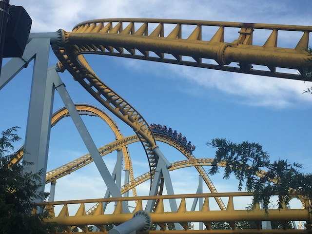
Today at Incrediblecoasters, we're going to be reviewing Skyrush. This is the Intamin Hyper Coaster at Hersheypark. And if you look at it, it looks fun. But it doesn't look like anything special. By looks alone, Candymonium appears to be the better hyper coaster. But.....looks can be decieving. Cause let me tell you. This thing KICKS ASS!!! ONE OF THE BEST COASTERS ON THE F*CKING PLANET!!! SUCH GOOD AIRTIME!!! THE EJECTOR AIR IS SO F*CKING GOOD!!! *deep breath* So yeah. I like this ride. Let's hop on. We get in the seats. Now....the seating on this ride is.....certainly unique. Half of the cars are normal sit down cars. But the other half....are like wing seats. So yeah. These seats....it's damn near like a Wing Coaster. Except that this ride is better than ANY Wing Coaster. And I'm not just refering to the B&M Wing Riders. ;) Then there's the matter of the restraints. The restraints on this ride are.....unique. This ride has lap bars, but.....they're not like your standard lap bar. Now you think Wing Coaster seat and lap bars, and you might think about those over the should lap bars that have recently been popping up on Inverted Coasters (Thanks for that Vekoma). But no. These things sort of....feel like a spatula that dig into your thighs. Yeah. These things are THICK!!! They paradoxically feel like nothing at all while feeling restrictive. I know some people don't like this as.....the extreme airtime plus only being restrained by your thighs just hurts them too much. But....NO!!! It's not that bad! Get over yourselves, you pussy enthusiasts! =P OK. Enough talk about the restraints. We're off. We head up the lifthill. It's not that big, but it's still particuarly quick because of the cable lifthill. Get a really nice view of Comet, and....we're already at the....NO!!! DOWN THE FIRST DROP!!! This thing just YANKS YOU DOWN!!!! No slowing down at the top, just.....BAM!!!! It's as brutal as going over a waterfall. Those don't stop before you fall either. Except you don't survive going down most waterfalls (Cliff jumping them is a ton of fun though). We gain a nice pop of airtime, a TON of speed, and some good laterals as right at the bottom of the drop, we go around a turn that really treats us right. Gives us some nice whippy laterals. That feels really good. Head straight up into an airtime hill. It's not very big and doesn't feel like much. But......BAM!!! EJECTOR AIR!!! And it's only gonna get stronger from here. >=) We then head into a big sweeping turn low to the ground. This again, gives us some really nice laterals. Also, just rushing really close to the ground is really cool. Especially if you're riding on a wing seat. We rise up into another airtime hill, and HOLY SH*T!!! THE AIRTIME IS SO F*CKING STRONG!!! AND WE STILL HAVE SO MUCH MORE OF THE RIDE TO PLOW THROUGH!!! We then roar through another low to the ground turn. Again, gettins some really nice laterals. I know we've got a pattern going on, but it's such a good one that I can't complain. Also, this turn is right above the water, giving a nice illusion of scraping the water. Hmm. Perhaps some fountains should go there. That'd certainly add more excitement (Then again, Skyrush doesn't need it cause it's already so damn good). We then head up into a small little hill, except we never unbanked. SIDEWAYS AIRTIME!!! BADASS!!! I LOVE IT!!! We unbank as we drop back down to the ground. But hey bank again as we go through another curve before SLAMMING into another slightly hilled curve. I know that was a weird thing to say. But basically, a turn that's also a tiny hill. And the laterals here are just simply phenomenal. I know everyone raves about the airtime this ride has. But.....don't hold back on the laterals. Because those are INSANELY strong as well. We then head into a Wave Hill. You know those Wave Hills that are found on Intamin MegaLites. It basically steals that element from them. Only being EVEN STRONGER AND BETTER!!! Smile on my face growing exponentially. And of course, go straight from that into BAM!!! ANOTHER EJECTOR AIR HILL!!! JESUS CHRIST!!! THIS IS RIVALING THE ROLLING THUNDER HILL ON EL TORO!!! THAT'S HOW STRONG THIS EJECTOR AIR IS!!! Rise up into a big banked turn right above Comet. For once, the ride is not trying to rip us out of the seat and eject us into the little pond its built above. Aww. We're winding down. We a tiny hill and glide rigt into the brake run. Aww. One downside of the ride is that its relatively short. It just feels like it could keep going. Also, the last few seconds does sort of cool down before hitting the brake run. But aside from that.....WOW!!! HOLY SH*T!!! I LOVE THIS RIDE SO MUCH!!! F*CK ALL THE PEOPLE WHINING ABOUT THE AIRTIME HURTING DUE TO THE RESTRAINTS!!! THIS RIDE KICKS ASS!!! So yeah. I like this ride and recommend riding it if you're at Hersheypark. Two thumbs up.
10/10
Location: Hersheypark
Opened: 2012
Built by: Intamin
Last Ridden: June 25, 2021
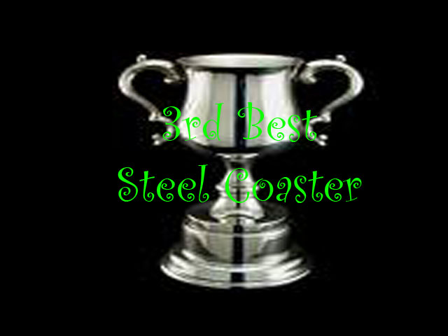
Skyrush Photos
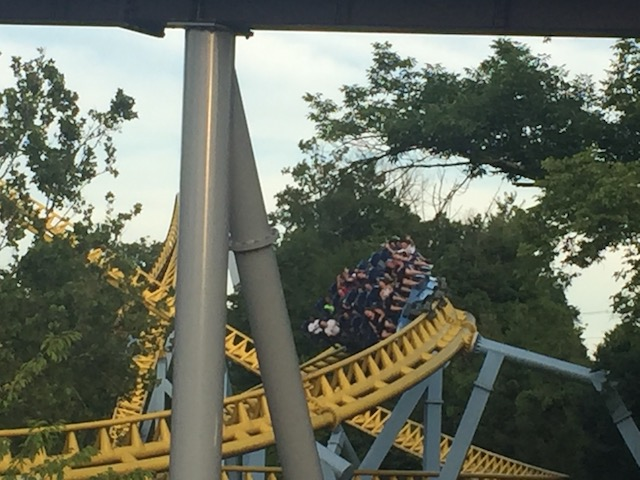
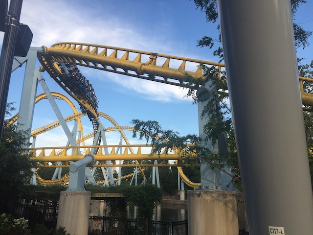
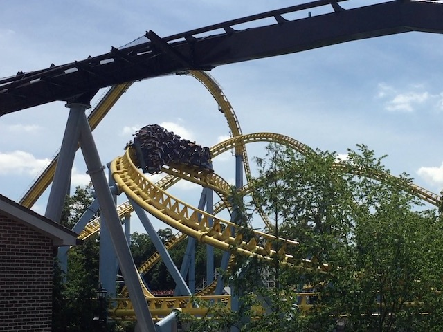
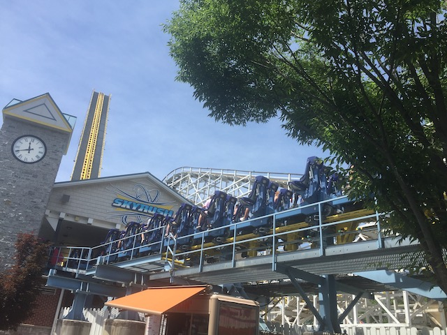
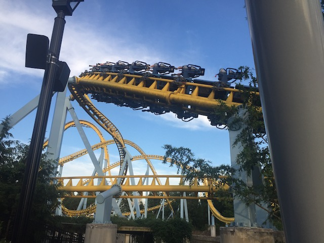
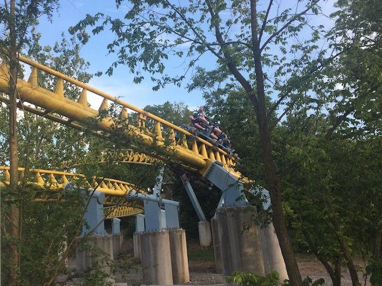
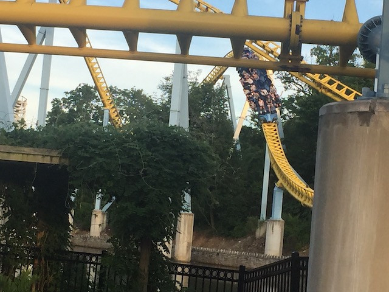
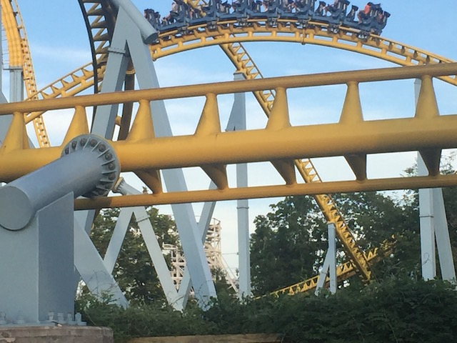
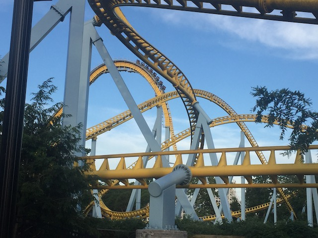
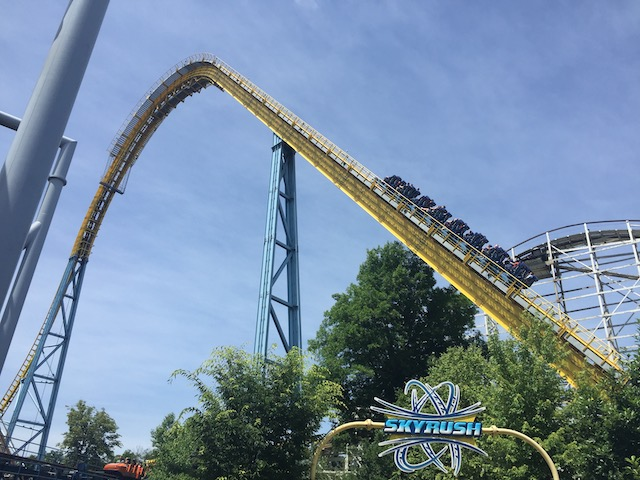
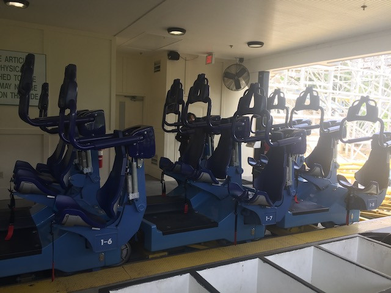
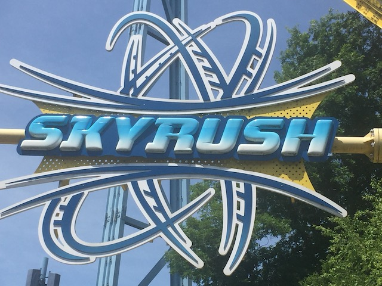
Home
|